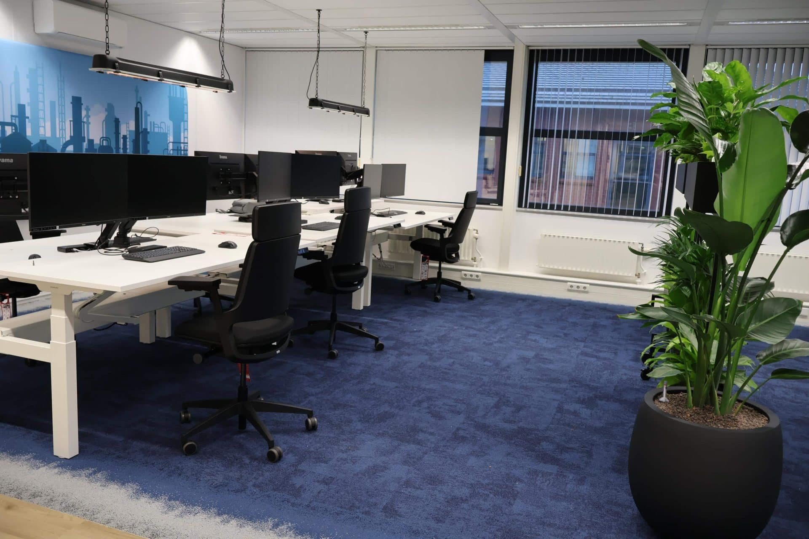
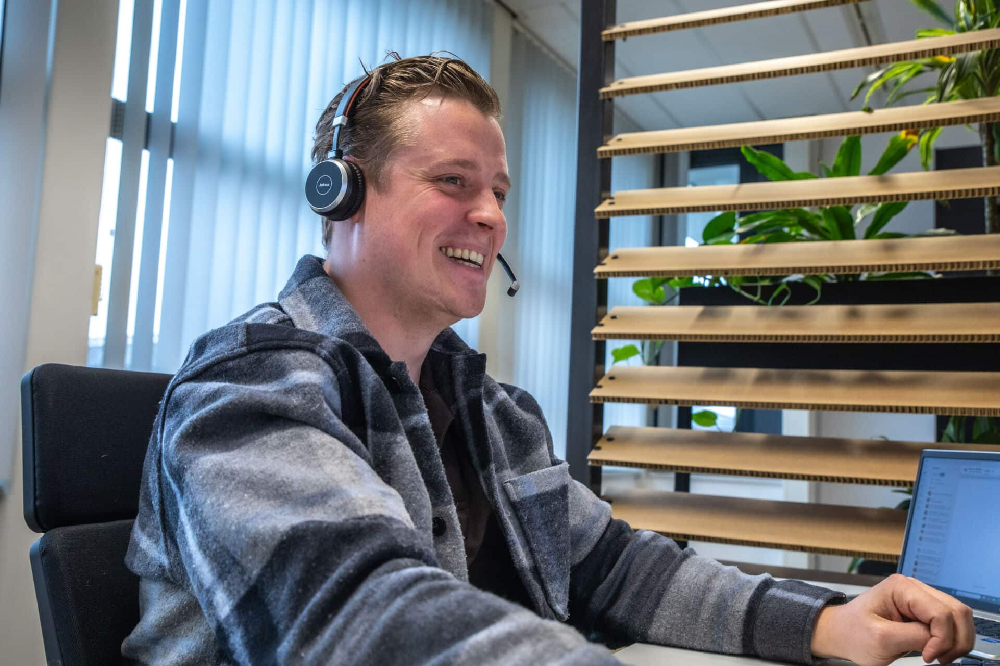
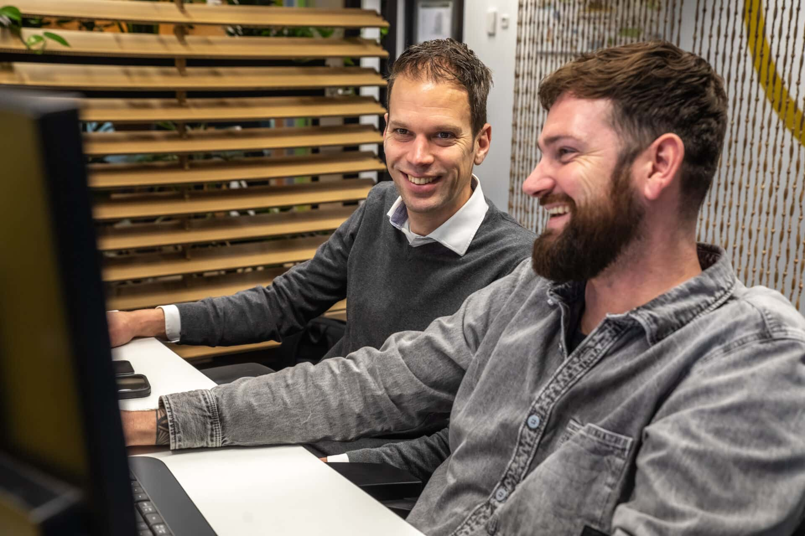

Diensten
Functioneel beheer
Binnen het functioneel beheer zorgen wij ervoor dat alle meldingen worden opgepakt en afgehandeld volgens de afgesproken SLA. Dit geldt zowel voor incidenten als voor standaard wijzigingen. We werken gestructureerd, transparant en met duidelijke terugkoppeling over voortgang en oplossing.
De spin in het web tussen gebruikers, processen en technologie.
Bij DIS Group hebben we een passie voor functioneel beheer. We zijn niet zomaar een schakel in het proces, we zijn jouw vertrouwde partner die zorgt dat alles soepel draait. Wij zijn de verbinding tussen jouw gebruikers, kerngebruikers en leveranciers zoals 4PS, Microsoft, WhiteVision en Exsion. Met diepgaande kennis van 4PS Construct, de bouwnijverheid en jouw specifieke inrichting zorgen we voor continuïteit én verbetering.
We spreken de taal van de techniek én van de business. En dat doen we voor een vast bedrag per maand, wel zo overzichtelijk.

Wat kun je van ons verwachten?
Bekijk voor wie wij dit doen
- Eerste- en tweedelijns support voor functionele vragen
- Snel en gestructureerd oplossen van issues en meldingen
- Oorzaakanalyse én structurele oplossingen
- Advies bij wijzigingsverzoeken (RFC’s)
- SPOC richting leveranciers zoals 4PS, Microsoft en Exsion
- Beheer van gebruikers en autorisaties
- Sparringpartner bij inrichting en procesoptimalisatie
- Ondersteuning bij uitrol van nieuwe 4PS releases en hotfixes
Bekijk voor wie wij dit doen
Persoonlijk, betrokken en écht onderdeel van jouw organisatie
Wat DIS Group onderscheidt? Ons persoonlijke contact. Je krijgt geen anonieme servicedesk, maar een vaste functioneel beheerder die jouw organisatie, mensen en processen écht kent. We integreren ons in jouw team, zijn benaderbaar en denken actief met je mee. Dat persoonlijke karakter zorgt voor korte lijnen, snel schakelen en écht passende oplossingen.
Onze kracht zit in de combinatie van kennis, ervaring en betrokkenheid. We begrijpen jouw business en 4PS Construct omgeving tot in detail en denken actief met je mee. Samen zorgen we dat jouw systemen geen blokkade zijn, maar een versneller van succes.
Functioneel beheer van DIS Group: slim geregeld. Heldere afspraken. Maximale grip. Met een persoonlijke touch.

Enkele van onze opdrachtgevers


Referenties
AQ Group

“Daadkrachtige consultants met veel kennis in huis”
Lees meer
Remondis

“Snel resultaat door gerichte 4PS ondersteuning”
Lees meer
Vrolijk Groep

“Flexibel, efficiënte toevoeging, deskundig, snel schakelen”
Lees meer